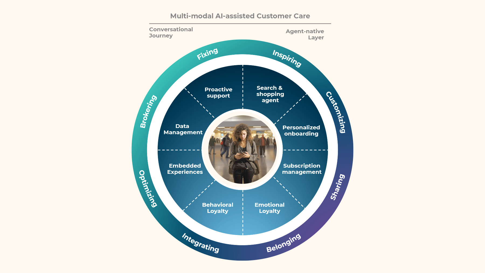

A charcoal gray Jeep Grand Cherokee. Leather seats. Wood trim. The fancy CarPlay thing. It took a while, but Maria had found the perfect rental car for her trip. Big enough for the group, a reasonable price and what looked like an easy pick up at the airport (no shuttle bus!)
Then she called to book it. The agent, Hector was friendly, but he couldn't guarantee that she'd get the car that she saw on the screen in front of her. He also couldn't commit to a final rate until after she booked. Frustration mounted, prompting Hector to bend the rules and directly contact the rental center to check on their expected Jeep inventory.
Almost half of our clients' bookings were happening by phone. Even with a well-designed site and app, many customers had a different mental model of their rental and wanted to get a human confirmation of what they were looking at. The agents on the other end of the line were navigating a collision of independent systems for reservations, inventory, billing, loyalty, each operating with its own view of the world and unaware of the others. It was up to Maria and Hector to put the puzzle pieces of this fragmented infrastructure together to try to create an integrated service.
The cost of misalignment
The consequences were significant: over 20% of reservation calls failed to convert, and 15% of calls were purely for rate shopping. Millions of dollars in bookings were lost annually because the service architecture did not match customers' expectations or brand promises. Meanwhile, the industry was evolving: peer-to-peer rentals, rideshares & waymos. EVs with sensitive sensors, autonomous driving features and incompatible charging networks. Vehicle telemetry data. The underlying model of a discrete rental transaction was being eroded by a more fluid, dynamic and distributed model that promised more choice, and delivered more complexity.
In conversations in executive offices, off-shore customer service centers and airport parking lots, we discovered that the system was designed to work on the assumption that customers would trust that they would get a "similar enough" vehicle. That trust had to cover a lot of ground behind the scenes: vehicle inventory, vehicle return and processing schedules, workforce management optimization and more. But what Maria was shopping for was confidence. Confidence that she would quickly and easily get the car she wanted. Clarity on how to drive and fuel it. And closure when she returned the vehicle. The service architecture was built for a world of direct bookings and fleet optimization. But technology, vehicles and customers had evolved, creating gaps and revealing valuable opportunities.
For example, traditionally a rental company had no active role while its customers were using its service. Customers put the rental paperwork in the glove box and didn't think about the rental company until it was time to return the vehicle. They navigated the challenges and opportunities of their trip themselves — from figuring out how to open the fuel door to experimenting with assisted driving features. With customer data showing that the quality of the driving experience was becoming a bigger factor in selection and loyalty, this was an opportunity to earn a role in a new part of the journey.
Connecting Customer Journeys to Service Architecture
Using the Next-Gen Customer Care framework I had developed, our team was able to connect end-to-end modern customer journeys to the reality of the underlying service architecture and operations. The required getting up to speed on fleet management, staffing and shifts, vehicle telemetry and maintenance. There was plenty of complexity and little continuity. But the business casing we did established a clear north star: a quantified opportunity to unlock a $60M revenue opportunity through improved conversion and extended customer lifecycle value. And a way to make the systems smarter, more useful and more engaging for all their users.
The Next-Gen Care framework provides a unique CX transformation offering based on our existing CX operations footprint with our clients. This outcome-based approach makes it possible to start small and increase velocity as Digital and AI improvements reduce the demand for human agents to support simple tasks like password reset and rate shopping.
Preparing for Conversational Journeys
We developed a custom workshop to connect stakeholders from across the organization to think about connecting or removing siloes and barriers that constrained the end-to-end journey. Using a "conversational journey" framework we reimagined a transactional journey as an ongoing conversation. Like any good conversation, it needed to be dynamic, responsive and have a tangible outcome. This work gave the organization a new, shared vocabulary for a technology and AI-supported customer relationship: Inspiring, customizing, sharing, belonging, integrating, optimizing, brokering and fixing.

The Next-Gen Service Architecture: Multi-modal, AI-assisted Customer Care
The Next-Gen Care framework is designed to define the new needs and capabilities of the People, Processes and Platforms involved in service delivery. With a focus on the Performance of the integrated service architecture, the framework quantifies the needs of customer, human and AI agents, and the underlying platform and APIs.
-
Customer Confidence
People needed to trust that what they saw online would be available when they called, that what agents confirmed would be there when they arrived, that the vehicle they reserved would match what they expected.
-
Empowered Advisors
Agents needed a unified view of the customer's journey before they called: What had they looked at? What had they almost booked? And a better understanding of how their loyalty status changes available options.
-
Intelligent Platform
The systems needed a new level of integration, using APIs as a way to activate what the brand knows, not just to connect systems. Sharing context and creating coherence where there had been fragmentation.
Using foundational inputs on current operating costs, existing technology and workforce initiatives and projections on loyalty, we were able to identify the most important capabilities needed to maximize the value of the existing architecture, and prepare for a future of AI-assisted, multi-modal customer care.
Driving change through organizational culture
The vision and the business case were powerful. But our client's global business started as a family-run rental. Leaders across the organization had started out in local offices, airport counters and garages. The culture was hands-on, grassroots and evidence-driven. Change had to start small, be agile and earn its progress. We created a CX Center of Excellence model, that came to be known as the "test kitchen". A controlled environment where we could gather the best operational intelligence, CX delivery expertise and business processes to incubate new capabilities and functions. We launched this with some fanfare internally to ensure we got the attention and engagement of leaders from across the organization. Once engaged, we were able to connect them with some of the best technology partners, customer service experts and analysts to remove friction and implement new solutions.
We started with Social Listening to understand the expectations, gaps and friction in each stage of the journey. This allowed us to test individual responses, service recovery workflows and understand the customer mindset and key points of friction. The test kitchen model embedded CX testing and transformation as a continuous practice, with an accessible and agile way to bring stakeholders together to improve outcomes and increase the business value of the CX ecosystem.
A Unified Service Architecture
The clients' Service Architecture now integrates vehicle telemetry, customer profiles and operational data into a unified platform capable of monitoring and weaving together the moments that matter. Not just the happy paths, but also the panic paths of vehicle maintenance, flight changes and even small moments of discovery and stress-reduction that were proven to improve the customers experience.
The outcome is a new level of service and relationship where our client can navigate both the changing marketplace and their internal culture, driving transformation and building confidence.